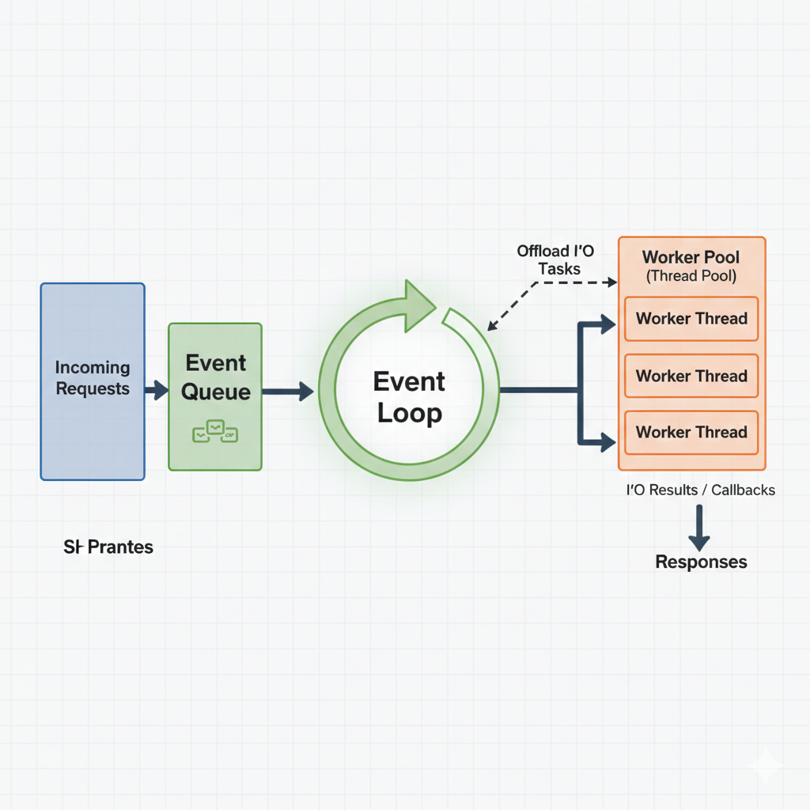
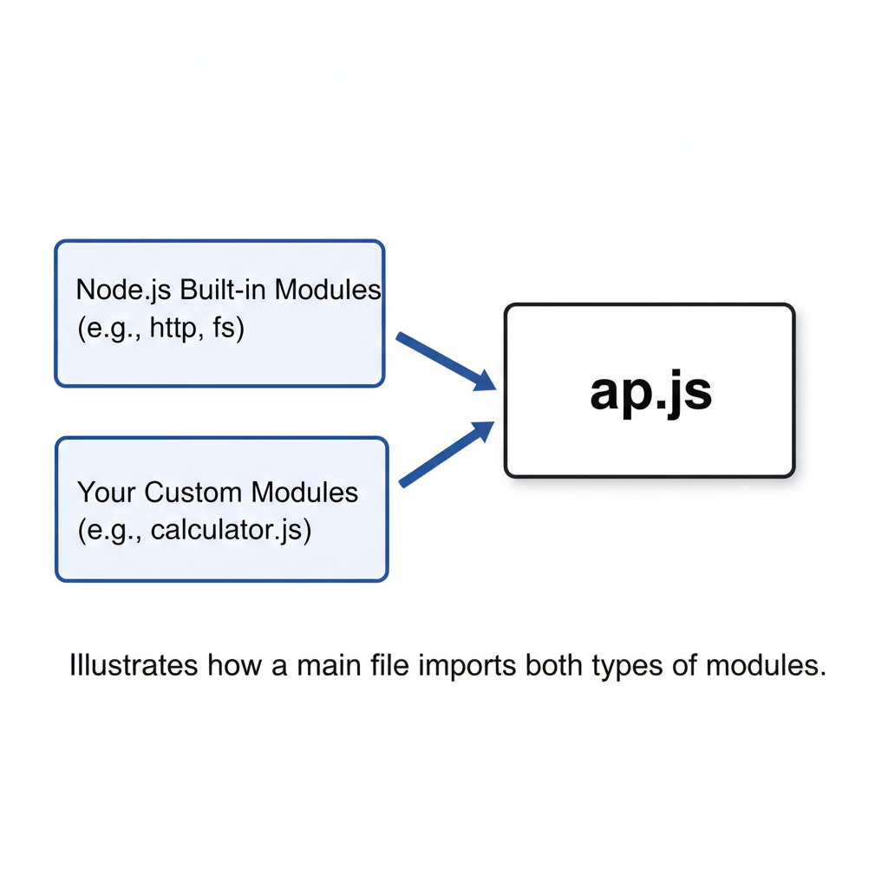
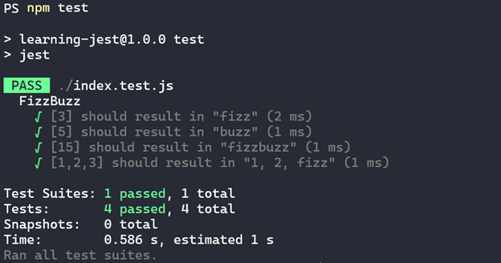

Server-side Development with Node.js
Node.js Architecture & Modules
What is Node.js•
It's not a language. It's a Runtime Environment built on Chrome's V8 JavaScript engine.

Figure: Node.js Architecture (V8 Engine, Libuv, Event Loop & Worker Threads)When thousands of users send messages or stream videos at the exact same second, traditional servers create a separate heavy thread for each person, quickly freezing up the server. Node's single-threaded event loop handles thousands of connections smoothly without waiting, making it ideal for live, real-time apps.
- Real-time Features (live stock prices, trading dashboards)
- Streaming (Netflix, YouTube)
- Single Page Apps (React Backends)
- Heavy CPU Tasks (Video Editing, AI)
- Complex Math (Data Science)
- Complex financial modeling
⭐ Browser JavaScript vs. Node.js
While both run JavaScript using Google's V8 engine, their runtime environments and available features are fundamentally different:
| Feature | Browser JavaScript | Node.js (Backend Runtime) |
|---|---|---|
| Environment | Client-side (runs in browsers like Chrome, Safari, Firefox) | Server-side (runs on OS - Linux, Windows, macOS) |
| Global Object | window, document, history |
global, process, globalThis |
| DOM & UI Access | Yes — can manipulate HTML tags, CSS, window events | No — has no window, document, or DOM tree |
| File System & OS Access | No — blocked by browser security sandbox | Yes — full access to files (fs), network, and OS (os) |
| Module System | ES Modules (import / export) |
CommonJS (require / module.exports) & ES Modules |
| Primary Role | User interaction, client validations, rendering views | API creation, database communication, file processing, business logic |
Browser JavaScript is what guests see and touch in your living room (buttons, images, forms). Node.js is the locked storage room in the back (database passwords, private user files). For safety, web browsers are strictly locked in a sandbox so random websites cannot read your laptop files. Node.js runs safely on your server with full file system access.
⭐ Node.js REPL (Read-Eval-Print Loop)
The REPL is an interactive shell bundled with Node.js that executes JavaScript commands line-by-line in real time without creating any files.
What REPL Stands For:
- Read: Reads user JavaScript input
- Eval: Evaluates/executes the code
- Print: Prints the evaluated result to the terminal
- Loop: Loops back and waits for the next input
Interactive REPL Session Example:
# Start the REPL by typing node in terminal:
$ node
Welcome to Node.js v20.x.x.
Type ".help" for more information.
> 5 + 10
15
> const greeting = "Hello FinTech";
undefined
> greeting.toUpperCase()
'HELLO FINTECH'
> _ + " Engineers!" // '_' holds the last evaluated result
'HELLO FINTECH Engineers!'Useful REPL Commands:
| Command | Action |
|---|---|
.help | Displays all REPL dot commands |
.exit (or Ctrl + C twice) | Exits the REPL session |
.clear | Resets the context / clears multi-line expressions |
.save filename.js | Saves the current REPL session into a file |
.load filename.js | Loads and executes an existing JavaScript file into REPL |
Before writing a long piece of code in a file, you open the Node REPL in your terminal just like opening a pocket calculator. You can instantly test a quick calculation, see how a JavaScript string method works ('hello'.toUpperCase()), or test a 2-line function in seconds without setting up any project files.
Node.js Fundamentals & Modules
1. Node.js Script
Create a JavaScript file (e.g., app.js) and execute it using Node runtime:
// app.js
console.log("Welcome to Node.js Backend Development!");
// Run from terminal:
$ node app.js2. Modules: Organizing Code
Node.js allows splitting code into reusable custom modules using CommonJS (module.exports & require):
// math.js (Custom Module)
function add(a, b) {
return a + b;
}
function subtract(a, b) {
return a - b;
}
module.exports = { add, subtract };
// app.js (Importing custom module)
const math = require('./math');
console.log(math.add(5, 3)); // 8
Figure: CommonJS Module Exports & Require Dependency WiringInstead of throwing all your tools into one giant messy box, you keep woodworking tools in one toolbox (math.js) and painting tools in another (colors.js). In Node.js, module.exports and require() let you keep code clean and take only the exact tool you need.
3. Creating a Web Server (HTTP Module) ⭐
 Figure: Anatomy of an HTTP Request and Response Stream
Figure: Anatomy of an HTTP Request and Response Stream
Node.js comes with a built-in http core module to build lightweight web servers without requiring third-party libraries:
// server.js
const http = require('http');
const PORT = 3000;
// Create HTTP server instance
const server = http.createServer((req, res) => {
// Set HTTP headers: Status 200 OK & Content-Type
res.writeHead(200, { 'Content-Type': 'application/json' });
// Basic Routing
if (req.url === '/') {
res.end(JSON.stringify({ message: "Welcome to Node.js HTTP Server!" }));
} else if (req.url === '/api/health') {
res.end(JSON.stringify({ status: "healthy", uptime: process.uptime() }));
} else {
res.writeHead(404, { 'Content-Type': 'application/json' });
res.end(JSON.stringify({ error: "Route not found" }));
}
});
// Start listening on port 3000
server.listen(PORT, () => {
console.log(`Server running at http://localhost:${PORT}/`);
});The built-in http module is like a waiter in a restaurant: when a customer visits your website URL (req.url === '/'), the server receives the request, prepares the response, and serves it back to the customer (res.end()). If the item isn't on the menu, it politely returns 404 Not Found.
Working with Files (fs Module)
1. The File System (fs) Module
Node.js has a built-in module called fs to interact with the local file system (read, write, append, delete).
Files are stored as binary (0s and 1s).
- Without
'utf8': You receive raw Buffer data (e.g.,<Buffer 48 65 6c...>). - With
'utf8': Node converts the buffer into human-readable Text.
2. Write and Read a File
Block 1: Import fs Module
const fs = require('fs');Block 2: Write File (Asynchronous)
fs.writeFile('log.txt', 'Transactions recorded successfully.', 'utf8', (err) => {
if (err) return console.error('Write Error:', err);
console.log('File saved successfully!');
});Block 3: Read File (Asynchronous)
fs.readFile('log.txt', 'utf8', (err, data) => {
if (err) return console.error('Read Error:', err);
console.log('File Content:', data);
});Just like a video game saves your high score or settings into a file on your disk, a server uses the fs module to write user uploaded files, record daily server logs, or read app configuration files when the application starts up.
⭐ Package Management with npm (Installing, Updating, Removing & package.json vs package-lock.json)
npm (Node Package Manager) is the software registry and dependency management tool for Node.js projects.
1. Core npm Commands
| Operation | Command | Description |
|---|---|---|
| Initialize Project | npm init -y |
Creates a default package.json file |
| Install Package | npm install express |
Installs package in node_modules and saves under dependencies |
| Install Dev Dependency | npm install --save-dev jest (or -D) |
Installs tools needed only during development/testing under devDependencies |
| Check Outdated Packages | npm outdated |
Lists all installed packages that have newer versions available |
| Update Package | npm update express (or npm update) |
Updates package(s) to the latest version matching semantic version rules |
| Remove / Uninstall Package | npm uninstall express |
Removes package from node_modules and deletes it from package.json |
2. package.json vs. package-lock.json
- Defines project metadata (name, version, author, scripts).
- Lists direct top-level dependencies.
- Uses Semantic Versioning (SemVer) ranges:
^4.18.2(Caret): Allows minor updates & patches (4.x.x)~4.18.2(Tilde): Allows only patch updates (4.18.x)4.18.2(Exact): Fixed version only
- Automatically created/updated by npm.
- Stores the exact, deterministic dependency tree including all nested sub-dependencies.
- Contains cryptographic integrity hashes (SHA-512) for tamper detection.
- Guarantees that
npm installon any team member's machine or production server produces identical results.
3. Testing with Jest
Testing is crucial for reliability.
Install Jest: npm install --save-dev jest.
// math.test.js
const math = require('./math');
test('adds 1 + 2 to equal 3', () => {
expect(math.add(1, 2)).toBe(3);
});
test('subtracts 5 - 2 to equal 3', () => {
expect(math.subtract(5, 2)).toBe(3);
});Add a "test" script to package.json: "test": "jest". Run tests with npm test.

package.json is like a grocery list that says 'buy butter and bread' (the ^ symbol allows slightly newer versions). package-lock.json is the exact printed receipt listing the exact brand, size, and batch number. It ensures that when your teammate installs the project, they get the exact identical setup with zero unexpected version bugs.
The Event Loop & Asynchronous Lab
What is the Event Loop•
Node.js uses a Single-Threaded Event Loop.
Analogy: A circular conveyor belt in a factory. It continuously checks for new tasks and processes them without waiting for long I/O operations to finish.
- Input: Tasks come in (like HTTP requests).
- Stack: Synchronous tasks are processed one by one in Call Stack (LIFO).
- Waiting: Asynchronous/long tasks are delegated to background (Node C++ APIs / Libuv).
- Queue: Completed tasks wait their turn in Callback Queue.
- Loop: When the Call Stack is empty, Event Loop pushes queue tasks to the stack.
⭐ Asynchronous Programming: Callbacks, Callback Hell & Promises vs. async/await
Node.js is single-threaded and non-blocking. It handles time-consuming tasks (database calls, file reads, network requests) asynchronously:
1. Callbacks & Callback Hell (The Pyramid of Doom)
A callback is a function passed as an argument to another function, executed when an asynchronous operation finishes. When multiple async tasks depend on each other, callbacks become deeply nested and unreadable:
// ❌ Callback Hell (Pyramid of Doom) - Hard to read, debug, and handle errors:
getUser(userId, (err, user) => {
if (err) return handleError(err);
getAccount(user.accountId, (err, account) => {
if (err) return handleError(err);
getTransactions(account.id, (err, transactions) => {
if (err) return handleError(err);
sendEmail(user.email, transactions, (err, result) => {
if (err) return handleError(err);
console.log("Transactions emailed successfully!");
});
});
});
});2. Promises: Escaping Callback Hell
A Promise represents a value that may be available now, later, or never. It has three states: Pending, Fulfilled (Resolved), or Rejected:
// Creating a Promise
function verifyPayment(amount) {
return new Promise((resolve, reject) => {
setTimeout(() => {
if (amount > 0) resolve({ status: "SUCCESS", amount });
else reject(new Error("Invalid payment amount"));
}, 1000);
});
}
// Chaining Promises with .then() and .catch()
verifyPayment(500)
.then(data => {
console.log("Payment Verified:", data);
return processOrder(data);
})
.then(order => console.log("Order Processed:", order))
.catch(err => console.error("Error occurred:", err.message));3. Modern async / await: Clean & Synchronous-Looking
async/await is syntactic sugar built on top of Promises. It allows writing asynchronous code with standard try / catch error handling:
// ✅ Modern, readable, clean async/await
async function checkout(userId) {
try {
const user = await getUser(userId);
const account = await getAccount(user.accountId);
const transactions = await getTransactions(account.id);
await sendEmail(user.email, transactions);
console.log("Transactions emailed successfully!");
} catch (error) {
console.error("Checkout process failed:", error.message);
}
}When you order pizza, you don't stare at the oven doing nothing—you go do your homework until it's ready (asynchronous). In old JavaScript, chaining multiple dependent tasks (make dough → add cheese → bake → deliver) created nested callbacks inside callbacks ('Pyramid of Doom'). Modern async / await lets you write each step on clean, sequential lines just like a clear recipe.
⭐ Event Loop & EventEmitter (events module)
Node.js is built around an Event-Driven Architecture. The built-in events module allows objects to communicate by raising (emitting) and listening for custom named events.
// eventDemo.js
const EventEmitter = require('events');
// Create an instance of EventEmitter
const paymentEmitter = new EventEmitter();
// 1. Register event listener (.on)
paymentEmitter.on('paymentReceived', (data) => {
console.log(`[Notification Service] Sending receipt to customer ${data.customerName} for $${data.amount}`);
});
paymentEmitter.on('paymentReceived', (data) => {
console.log(`[Ledger Service] Updating account balance for ID: ${data.accountId}`);
});
// 2. Trigger/Fire the event (.emit)
console.log("Initiating transaction...");
paymentEmitter.emit('paymentReceived', {
accountId: "ACC-9081",
customerName: "Alice",
amount: 250
});emitter.on(event, listener): Adds a listener function for the named event.emitter.emit(event, [arg1], [arg2]): Synchronously calls each listener registered for the event.emitter.once(event, listener): Adds a one-time listener that executes only once and is then removed.emitter.removeListener(event, listener): Removes a specific listener.
An EventEmitter works just like a house doorbell. When a visitor presses the button (emitter.emit('doorbell')), whoever is inside listening for that sound (emitter.on('doorbell')) gets notified and answers the door. It keeps different parts of your app completely independent.
1. Understanding Asynchronous Code
Node.js is non-blocking. It doesn't wait for timers to finish before moving to the next line.
console.log("Start");
setTimeout(() => {
console.log("After 2 seconds");
}, 2000);
console.log("End");How the Event Loop Works
console.log() runs immediately
setTimeout sent to APIs
More code keeps running
Callback waits in queue
Moves callback to stack
Event Loop Simulation
Call Stack (LIFO)
Node APIs
Callback Queue
Imagine a chef at a burger counter. When a customer orders fries, the chef drops them into the fryer (background timer) and immediately takes the next customer's order instead of standing still waiting for the fryer. When the timer dings, the chef bags the fries and gives them to the customer. That's how Node's Event Loop stays fast and never blocks!